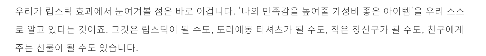

Small luxury life



어른들은 ‘사치하면 안된다'
'사치는 나쁜거다’ 라는 말을
종종 하셨다. 나도 그런줄
알았다. 하지만 내가 가끔
몰래 경험했던 사치는 언제나
짜릿하고 잠시지만 행복했다.
큰 사치는 아니였다. 한정된
용돈에서 꽤 큰 비중을 ‘경험’
이나 ‘예쁜 쓰레기’ 같은 것에
투자한 정도? 그렇게 작은
사치를 실행하고 나면, 혼날 것
같은 두려움이 듦과 동시에
‘사치가 정말 나쁘기만 한가?'
'적당히 가끔은 괜찮지 않나?’
라는 생각이 들었다. 나는 오늘
하루를 열심히 살았고, 만만치
않은 일상을 버티는 중인데,
잠시 좀 행복하면 안될까?
나처럼 요즈음 젊은 사람들의
소비 관점도 많이 달라졌다.
저축을 중요시하던 옛 세대와
달리, 지금의 2030 세대는
가치 판단을 통해 가격 대비
만족이 큰 ‘럭셔리 소비’를
추구한다. 불경기와 취업난
속에서 불확실한 미래에
집중하기보단 현재의 확실한
만족에 집중하고 싶은 것이다.
나도 이런 럭셔리 소비자에
해당되며, 나의 작은 사치를
점점 당당히 드러내었다.
그리고 내가 원하는 유형의 더
확실한 만족을 찾기 시작했다.
나도 명품을 왕창 사거나
분수에 맞지 않는 사치에는
동의표를 던지지 않는다.
하지만 가끔, 작은 사치라면
지친 우리들의 일상에 ‘작은
위로’가 되어줄 수 있다.
그래서 나만의 작은 사치
방법을 소개해보려고 한다.